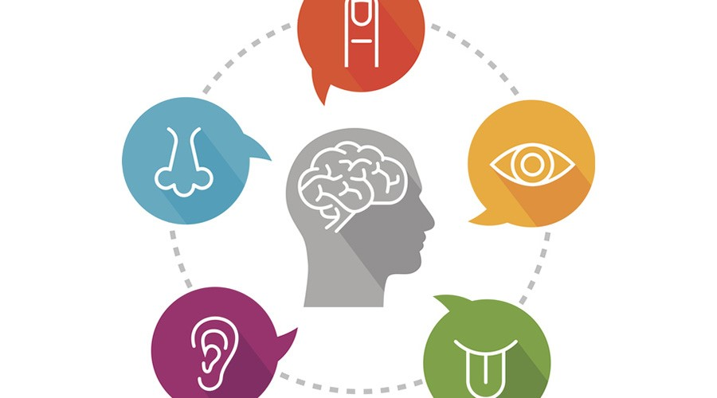
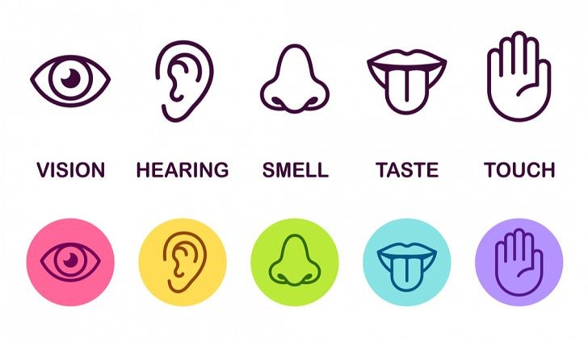

|  |
Čula nam omogućavaju da upoznajemo svijet oko sebe, da uživamo u prijatnoj muzici i ukusnoj hrani, upozoravaju nas na opasnost... Čovjek ima pet osnovnih čula: vid, sluh, dodir, miris i ukus. Svako čulo sastoji se od čulnog organa, osjećajnih nervnih vlakana i čulnog centra u mozgu. Nervni sistem je povezan sa čulnim organima, koji primaju informacije iz spoljašnje sredine. Svaki čulni organ ima receptore, koji primaju samo odeđenu vrstu draži. Hemijske draži primaju hemoreceptori, dok svjetlosne draži primaju fotoreceptori. Pod uticajem draži u receptorima nastaju nervni impulsi, koji se osjećajnim nervnim vlaknima prenose do centra čula u velikom mozgu. Kada impulsi stignu do mozga, nastaje osjećaj toplote, dodira, mirisa... |